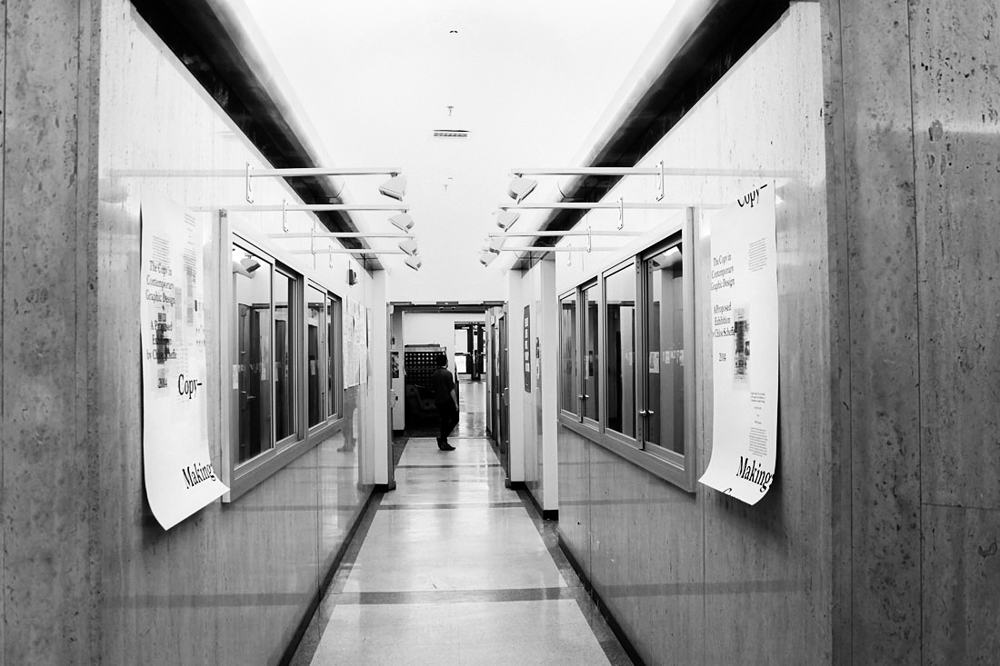
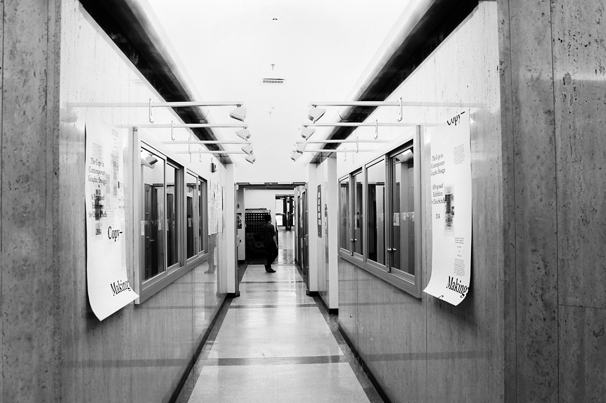
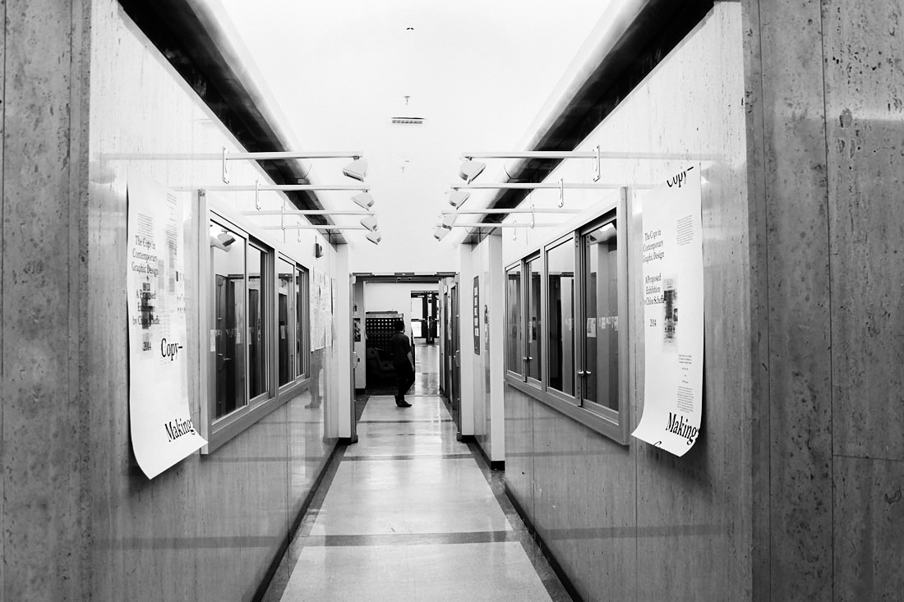

The booklet is a guide to the iteration of the show installed at the RISD Museum and uses my essay as a critical lens. The first edition was produced live at the museum as part of Design the Night.
The images on the posters are actual-size reproductions of a catalog for the show that I produced (not pictured). The posters themselves functioned as advertisements for my proposed exhibition within a real show of all the proposed exhibitions conceptualized by the class. They were hung across from each other to reiterate the idea of the copy in physical space.
Graphic Design: Now on Display (10 Proposals for Exhibitions of Contemporary Graphic Design), RISD Museum, 2014
